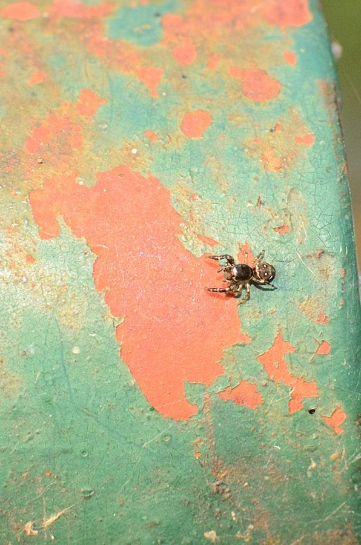

सफेद सिरे वाली जंपिंग मकड़ीWhite-tipped Jumping Spider
Icius alboterminus · Salticidae · SPD-0040

- Scientific name वैज्ञानिक नाम
- Icius alboterminus (Caleb, 2014)
- Family कुल
- Salticidae
- Hindi हिंदी
- सफेद सिरे वाली जंपिंग मकड़ी
- Local names स्थानीय नाम
- white-tipped jumping spider, icius makdi, safed sir wali makdi
- Status here यहाँ की स्थिति
- native
- Movement आवागमन
- Resident, here all year
- Known from कहाँ दर्ज
- Others have published records from the wider Awadh–Purvanchal plain, none yet from Basti–Ayodhya अवध–पूर्वांचल से दूसरों के प्रकाशित अभिलेख, बस्ती–अयोध्या से अभी नहीं
- IUCN IUCN
- not evaluated
- Review समीक्षा
- not yet reviewed
When to look कब देखें
Present all year. साल भर मौजूद।
Uses and possibilities उपयोग और संभावनाएँ
Drawn from the documented uses in the profile below, where each is labelled traditional, current or a research lead. All uses →
Tell it apart from इनसे अलग पहचानें
सफेद सिरे वाली जंपिंग मकड़ी / White-tipped Jumping Spider
Icius alboterminus (Caleb, 2014) — Salticidae
सफेद सिरे वाली जंपिंग मकड़ी — झाड़ियों, घास के मैदानों, खेत की मेड़ों और बगीचों की पत्तियों पर पाई जाने वाली एक अत्यंत छोटी, फुर्तीली और सुंदर कूदने वाली देशी मकड़ी है। इसका शरीर गहरा भूरा या तांबई होता है जिसके किनारों पर सफेद धारियां होती हैं। इसकी सबसे खास पहचान इसके नर के मुंह के पास स्थित स्पर्शकों (पैल्प्स) और आगे के पैरों के सिरों पर मौजूद चमकदार सफेद रोएं हैं, जो चलते समय सफेद बिंदुओं की तरह चमकते हैं और मादा को रिझाते समय रोशनी की तरह हिलते हैं। यह शिकार पकड़ने के लिए कोई जाला नहीं बनाती, बल्कि पत्तियों पर फुदकती हुई चलती है और अपनी बड़ी आंखों से देखकर छोटे कीड़ों पर झपटती है। यह फसलों को नुकसान पहुंचाने वाले सूक्ष्म कीटों को नियंत्रित करने में सहायक है।
Quick Identification त्वरित पहचान
| Feature | Description |
|---|---|
| Female Size | Body length up to 5 mm (Caleb 2014) |
| Male Size | Body length up to 4.5 mm (Caleb 2014) |
| White Tips | Distal segments of male pedipalps and first legs capped with bright white setae (Caleb 2014) |
| Carapace | Dark chestnut-brown with metallic bronze sheen and pale marginal hair bands (Caleb 2014) |
| Abdomen | Elongate-oval with a dark median longitudinal band bordered by creamy-white lateral stripes (Caleb 2014) |
| Eyes | Large forward-pointing anterior median eyes ringed with fine golden-brown hairs (Metzner 2025) |
| Hunting Style | Agile visual stalk-and-pounce foliage predator without a capture web |
Field tip: Look closely at sunny leaves of low garden weeds and pulse crops. A tiny jumping spider with a dark body flanked by white side stripes, whose palps and front leg tips are adorned with conspicuous white tufts, is Icius alboterminus.
हिंदी: यह बहुत छोटी भूरी मकड़ी है जिसके शरीर के दोनों तरफ सफेद धारियां होती हैं। इसके आगे के अंगों (पैल्प्स) के सिरों पर सफेद बालों के गुच्छे होते हैं जो सफेद सिरे जैसे दिखते हैं। यह पत्तों पर फुदकती हुई शिकार करती है।
Morphology आकारिकी
Measurements as given in the handbooks and original description (Caleb 2014; Metzner 2025):
| Measurement | Value | Source |
|---|---|---|
| Female body length | up to 5 mm | Caleb (2014) |
| Male body length | up to 4.5 mm | Caleb (2014) |
| Carapace shape | Moderately high, elongated, gently convex | Caleb (2014) |
| Eye arrangement | Four pairs in three rows (4-2-2) | Metzner (2025) |
The cephalothorax is longer than wide, moderately high, and gently arched dorsally (Caleb 2014). The ocular quadrangle occupies nearly half the length of the carapace; the eye field is dark reddish-brown to black with a subtle coppery or metallic greenish sheen under bright sunlight. The anterior median eyes are exceptionally large and forward-facing, bordered with pale yellowish setae. The chelicerae are small, vertical, and dark brown. The abdomen is elongate-oval, slightly tapered posteriorly, and displays a characteristic pattern: a broad dark brown median band runs longitudinally down the dorsum, enclosed on both sides by distinct creamy-white or pale yellow lateral bands (Caleb 2014).
The male pedipalps are distinctive: the cymbium and distal palpal segments are adorned with a dense cluster of brilliant white setae that form the namesake "white tips" utilized during optical signaling (Caleb 2014). The walking legs are moderately slender, yellowish-brown with darker longitudinal striping on the femora.
हिंदी: इसका शरीर छोटा और सुडौल होता है। सिर का हिस्सा गहरा भूरा होता है जिस पर तांबई चमक होती है। पेट पर बीच में एक काली-भूरी पट्टी होती है जिसके दोनों ओर सफेद धारियां होती हैं। नर के पैल्प्स की नोक पर घने सफेद बाल होते हैं। पैर हल्के पीले-भूरे रंग के होते हैं।
Behaviour & Ecology व्यवहार और पारिस्थितिकी
The White-tipped Jumping Spider is an active diurnal cursorial hunter that inhabits low vegetation, agricultural herbs, flowering shrubs, and grassy field margins. It prefers warm, sunny microhabitats where small phytophagous insects congregate.
This spider moves with quick, rhythmic runs interspersed with abrupt stops. During pauses, it continuously swivels its cephalothorax to survey its surroundings. The male frequently moves his white-tipped palps up and down like small white flags, a behavior that aids in intra-specific recognition and signaling to potential mates. When a small insect is detected, Icius alboterminus approaches with deliberate stalking movements, fastens a silk dragline to the leaf, and pounces with precision from a distance of several times its body length. During nighttime or adverse weather, it rests inside a small, flat oval silk retreat spun inside a folded leaf crevice.
हिंदी: यह मकड़ी दिन में धूप वाले पौधों और झाड़ियों पर घूमती है। चलते समय यह अपने सफेद सिरे वाले पैल्प्स को झंडे की तरह ऊपर-नीचे हिलाती रहती है। किसी छोटे कीड़े को देखते ही यह चुपके से उसके पास पहुंचती है और सुरक्षा धागा चिपकाकर एक झटके में उस पर छलांग लगा देती है। रात में यह रेशमी कोकून में आराम करती है।
Life Cycle / Phenology जीवन चक्र
Seasonal phenology in northern Indian plains across the agricultural year:
| Season / Month | Stage | Field Observation |
|---|---|---|
| March–May (Summer / Zaid) | Active foraging | Immatures and adults hunt on flowering garden weeds and pulse crops |
| June–July (Monsoon onset) | Courtship & mating | Males wave white-tipped palps in rhythmic courtship displays on leaves |
| August–September (Kharif peak) | Egg sac construction | Females guard small white silk egg cocoons inside folded leaves |
| October–November (Post-monsoon) | Spiderling dispersal | Newly emerged juveniles disperse through vegetation by crawling and ballooning |
| December–February (Rabi winter) | Winter retreat | Adults shelter in sealed silken cells in leaf litter and grass bases |
Reproduction occurs primarily during the warm monsoon months. Courtship involves sophisticated optical displays: the male positions himself directly in front of the female, raises his first legs slightly, and bobs his white-tipped pedipalps rhythmically like signaling beacons. If the female accepts, copulation takes place. The female subsequently constructs a compact, lens-shaped silk egg sac inside a folded leaf or seed capsule, depositing a small cluster of spherical eggs. She remains stationed over the sac to deter predatory ants and parasitoid wasps until the spiderlings hatch after several days and disperse following their initial molt.
हिंदी: बरसात के समय इनका प्रजनन होता है। नर अपने सफेद सिरे वाले पैल्प्स को हिलाकर मादा के सामने खास तरह का इशारा करता है। मादा मुड़े हुए पत्ते में रेशम का घोंसला बनाकर अंडे देती है और उनकी रखवाली करती है। कुछ ही दिनों में अंडों से बच्चे बाहर आ जाते हैं।
Diet and Feeding Behaviour आहार
Icius alboterminus is a diurnal micro-predator feeding on small, soft-bodied plant-dwelling invertebrates:
Natural prey items:
- Thrips and minute leafhoppers infesting vegetable and pulse crops.
- Sap-sucking aphids and whitefly nymphs.
- Small dipteran flies, midges, and mosquitoes resting on leaves.
- Tiny caterpillars, micro-moths, and small plant bugs.
हिंदी: यह फसलों और पौधों पर पाए जाने वाले बहुत छोटे कीटों को खाती है। यह मुख्य रूप से थ्रिप्स, माहू (एफिड्स), सफेद मक्खियों, छोटे मच्छरों और नन्हीं इल्लियों का शिकार करती है।
Predators / Natural Enemies शत्रु
Documented natural predators in northern Indian agricultural and scrub ecosystems:
- Small insectivorous birds: Active gleaners like Oriental Magpie-Robin, Black Drongo, and Common Myna snatch small spiders from foliage.
- Hunting wasps: Spider-hunting wasps like Mud Dauber Wasp that provision larval mud pots with paralyzed salticids.
- Predatory arthropods: Foliage-hunting mantids, assassin bugs, and larger jumping spiders like Thyene imperialis.
- Small lizards: Garden lizards and skinks foraging along field edges.
हिंदी: छोटे पक्षी, मड डॉबर वास्प (कुम्हारी ततैया), शिकारी कीड़े और गिरगिट इस छोटी मकड़ी का शिकार करते हैं।
Agricultural / Human Relevance कृषि प्रासंगिकता
Natural pest suppression in crops: The White-tipped Jumping Spider is an effective natural enemy of micro-pests in pulse crops (pigeon pea, gram), vegetables, and mustard fields. Because of its small size and high agility, it specializes in capturing minute sap-feeding pests like thrips and aphids that often escape larger generalist predators.
Entirely harmless to humans: Due to its minute size and delicate fangs, Icius alboterminus cannot pierce human skin and is completely non-venomous and harmless to humans and pets.
Traditional: A common but overlooked beneficial garden jumper in rural Awadh.
Today: Recognized in Indian arachnological research as a widespread native salticid contributing to crop micro-faunal balance.
Research direction (a lead, not a result): Assessing the functional predation response of Icius alboterminus on bean thrips in eastern Uttar Pradesh agricultural plots.
हिंदी: यह फसलों के लिए बहुत उपयोगी मकड़ी है जो दालों और सब्जियों में लगने वाले बारीक हानिकारक कीड़ों (थ्रिप्स और माहू) को खाकर जैविक नियंत्रण में मदद करती है। यह इंसानों के लिए पूरी तरह सुरक्षित और विषहीन है।
Expected Locally स्थानीय रूप से अपेक्षित
Not a field record. Written from published accounts for eastern Uttar Pradesh. No confirmed local sighting yet — if you have seen it, that is what the atlas needs.
अभी तक स्थानीय पुष्टि नहीं। यह विवरण प्रकाशित स्रोतों से है, किसी अवलोकन से नहीं।
The White-tipped Jumping Spider is expected across eastern Uttar Pradesh in agricultural fields, pulse plots, vegetable gardens, and scrubby roadside vegetation. Look on sunny leaves of low herbs and flowering bushes from April through October. GBIF holds published records from the wider Awadh–Purvanchal plain, none yet from Basti–Ayodhya. A voucher photograph showing the dark body, lateral pale stripes, and white-tipped palps, submitted via the About page, would confirm the first local documentation for the project area.
Distribution वितरण
Global range: Endemic to South Asia, primarily recorded across India (World Spider Catalog 2025).
In India: Originally described from southern India (Tamil Nadu) and subsequently documented across central, western, and northern states including Uttar Pradesh (Caleb & Sankaran 2025).
In Uttar Pradesh: Recorded from agricultural research plots, botanical reserves, and rural scrub tracts of the Gangetic plain.
In Basti district / eastern UP: Expected as a resident native species in agricultural crop margins, pulse fields, and garden vegetation.
हिंदी: यह भारत की एक मूल निवासी देशी मकड़ी है। उत्तर प्रदेश में यह कृषि क्षेत्रों, दालों के खेतों और झाड़ियों में सामान्य रूप से उपस्थित है।
Research Questions शोध प्रश्न
- What is the specific signaling function of the white palpal setae during male-male agonistic encounters compared to male-female courtship? / नर मकड़ी के पैल्प्स के सफेद बाल आपस में और मादा से बातचीत में क्या भूमिका निभाते हैं?
- What is the daily consumption rate of thrips by Icius alboterminus on flowering pigeon pea crops?
- How does crop harvesting and stubble burning affect the local abundance and recolonization rates of this species? / फसल कटाई और पराली जलाने से इस मकड़ी की संख्या पर क्या असर पड़ता है?
- What microhabitat factors determine the selection of overwintering sites in agricultural field borders?
- How do synthetic pyrethroid sprays affect the predatory jumping mechanics of Icius alboterminus?
Similar Species मिलती-जुलती प्रजातियाँ
| Species | Key Differences | |
|---|---|---|
| Icius alboterminus (White-tipped Jumper) | Dark brown with pale side stripes; distinct white setae on male palp tips and first leg tarsi; up to 5 mm (Caleb 2014) | |
| Phintella vittata ([[banded_phintella\ | Banded Phintella]]) | Body with brilliant metallic blue-green and yellow iridescent stripes; palps lack white brush tips (Caleb & Sankaran 2025) |
| Hasarius adansoni ([[adansons_jumping_spider\ | Adanson's Jumping Spider]]) | Body larger; male has bold white crescent band on rear head and white spots on black abdomen (Metzner 2025) |
| Thyene imperialis ([[imperial_jumping_spider\ | Imperial Jumping Spider]]) | Body much larger; male has coppery-orange head, white side bands, and heavily fringed black front legs (Metzner 2025) |
Field rule: A tiny jumping spider with a dark body, pale lateral stripes, and prominent white tips on its pedipalps and front leg tarsi, actively prowling low foliage without a web, is Icius alboterminus.
हिंदी: बैंडेड फिनटेला पर नीली-हरी चमकदार धारियां होती हैं, जबकि सफेद सिरे वाली मकड़ी के पैल्प्स की नोक पर साफ सफेद बालों के गुच्छे होते हैं।
Taxonomy & Classification वर्गीकरण
Original description. Described by John T. D. Caleb in 2014 as Phintella alboterminus in Munis Entomology & Zoology, volume 9, issue 2, pages 605–608, from India.
Subspecies. Monotypic — no subspecies are recognized across its continental range.
Family and order placement. Order Araneae, suborder Araneomorphae, family Salticidae, subfamily Salticinae, tribe Chrysillini. The genus Icius Simon, 1876, encompasses small, agile jumping spiders with distinctive palpal and somatic structures.
Phylogenetic notes. Transferred from Phintella to Icius based on male palpal bulb anatomy and epigynal configuration (World Spider Catalog 2025).
IUCN status rationale. Not evaluated (NE) on the global IUCN Red List of Threatened Species. It maintains widespread populations across Indian agroecosystems.
हिंदी: इसका वैज्ञानिक नाम Icius alboterminus है और यह Salticidae (कूदने वाली मकड़ियों) परिवार की सदस्य है।
Photo Gallery फोटो गैलरी
No photos yet — add field photos to media/species/white_tipped_jumping_spider/ and run node scripts/sync_photos.js.
Photos needed आवश्यक फोटो
- [ ] Dorsal view showing dark body and pale lateral stripes (गहरे शरीर और सफेद धारियों की तस्वीर)
- [ ] Frontal close-up showing prominent white-tipped palps and eyes (सफेद सिरे वाले पैल्प्स और आंखों का क्लोज़-अप)
- [ ] Adult male performing palp-bobbing signaling on a leaf (पत्ते पर पैल्प्स हिलाता हुआ नर)
- [ ] Specimen feeding on a small pest insect (कीट का शिकार करती मकड़ी)
References संदर्भ
- Caleb, J. T. D. (2014). A new species of Phintella Strand (Araneae: Salticidae) from India. Munis Entomology & Zoology, 9(2): 605–608.
- Caleb, J. T. D. & Sankaran, P. M. (2025). Araneae of India. Version 2025. Online checklist.
- Metzner, H. (2025). Jumping spiders (Arachnida: Araneae: Salticidae) of the world. Online database, verified via jumping-spiders.com.
- Caleb, J. T. D. (2020). Spider (Arachnida: Araneae) fauna of the scrub jungle in the Madras Christian College campus, Chennai, India. Journal of Threatened Taxa, 12(7): 15711–15766. doi:10.11609/jott.5758.12.7.15711-15766
- World Spider Catalog (2025). World Spider Catalog, Version 26.0. Natural History Museum Bern.
- GBIF Occurrence Data — Icius alboterminus, India (2025).
Source file: species/fauna/spiders/white_tipped_jumping_spider.md